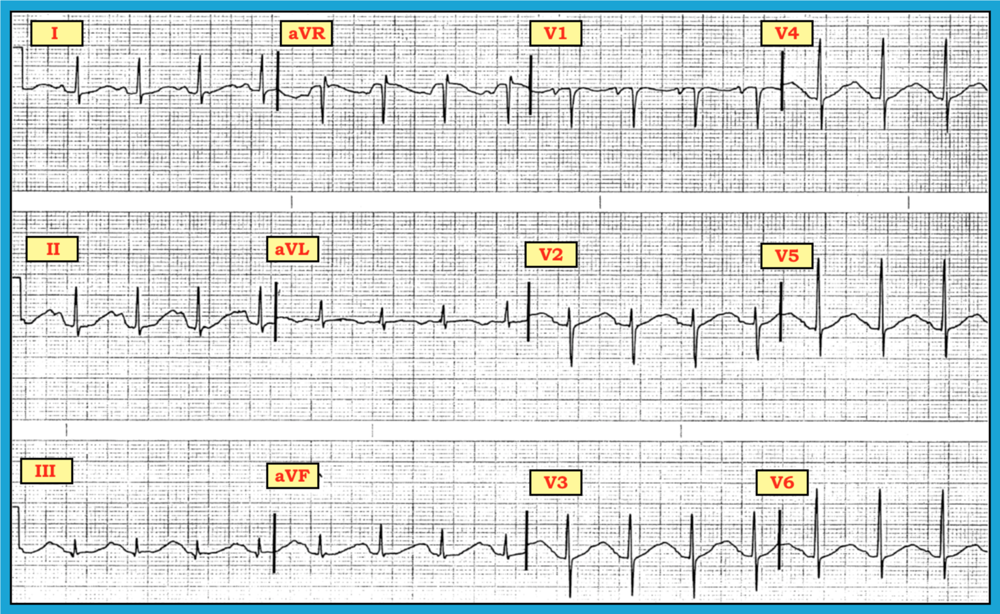
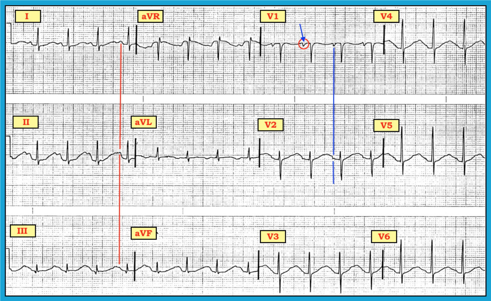
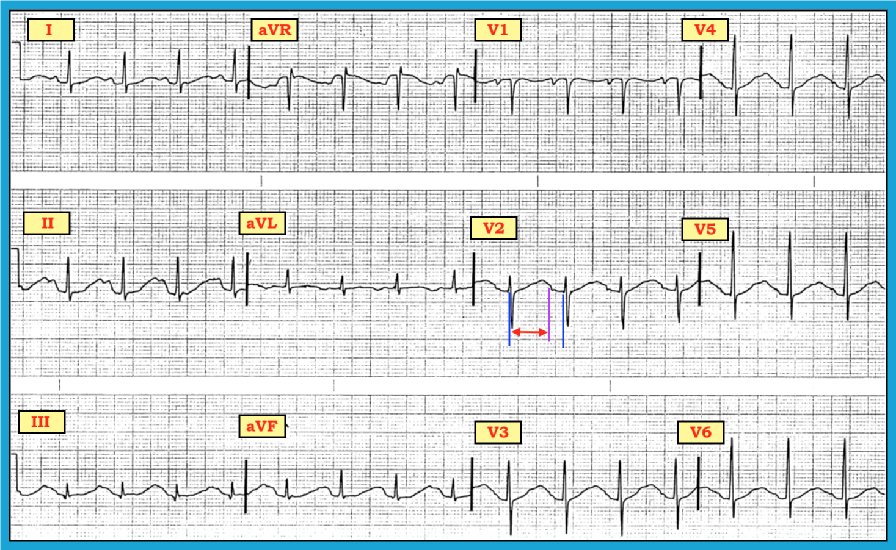
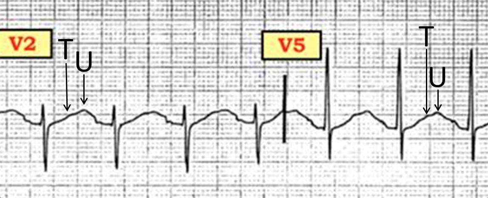
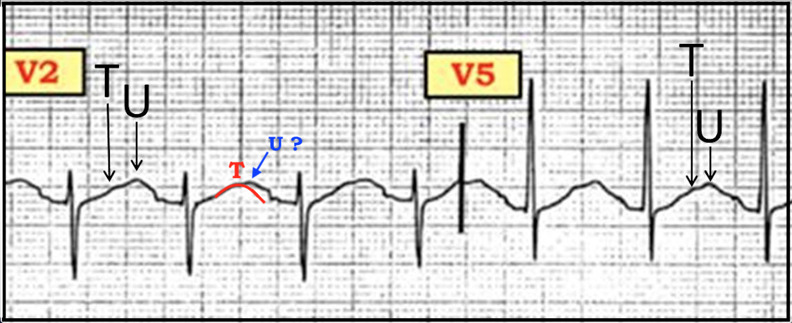

ECG Blog #152 (QTc – Danh sách tra cứu điện tâm đồ – Nhịp xoang)
Một phụ nữ 59 tuổi nhập viện trong tình trạng không đáp ứng với nghi ngờ nhiễm khuẩn huyết. Một điện tâm đồ trước đây được đọc là “bình thường”. Bạn sẽ diễn giải điện tâm đồ ban đầu của bệnh nhân này như thế nào? (Hình-1).
- Nhịp là gì?
- Những bệnh cảnh lâm sàng nào cần được xem xét là có thể góp phần gây ra các bất thường này?


Diễn giải: Chúng tôi bắt đầu việc diễn giải có hệ thống bằng đánh giá nhịp. Việc này có phần khó — vì không thể thấy ngay là có (hay không có) sóng P dương ở chuyển đạo II.
- Chuyển đạo II thường là chuyển đạo hữu ích nhất để đánh giá nhịp. Thật vậy, chúng tôi định nghĩa một nhịp có nguồn gốc xoang nếu các sóng P có hình dạng giống nhau và dương ở chuyển đạo II.
- Điện tâm đồ ở Hình-1 là một trong những trường hợp thỉnh thoảng gặp, khi cơ chế của nhịp không rõ nếu chỉ đánh giá chuyển đạo II — vì sóng P ở chuyển đạo này không phân biệt rõ được với phần cuối sóng T. Do đó, chúng ta cần xem các chuyển đạo khác để xác định nhịp (Hình-2).


Xác định nhịp:
Chuyển đạo thể hiện sóng P rõ nhất ở Hình-2 là chuyển đạo V1 (mũi tên màu xanh chỉ vào bên trong vòng tròn ĐỎ). Không còn nghi ngờ gì rằng sóng P hiện diện đều đặn ở chuyển đạo V1 và luôn dẫn truyền xuống thất với khoảng PR hằng định ở chuyển đạo này.
- Chuyển đạo còn lại trong bản ghi này mà ở đó chúng ta thấy rõ sóng P dẫn truyền với khoảng PR hằng định là chuyển đạo I. Vận dụng khái niệm các chuyển đạo ghi đồng thời — chúng ta có thể kẻ một đường thời gian (đường thẳng đứng màu ĐỎ ở Hình-2) từ các sóng P mà chúng ta chắc chắn thấy ở chuyển đạo I. Làm như vậy xác nhận rằng khía nhẹ thấy ở phần cuối sóng T ở chuyển đạo II thực ra là một sóng P dương đã hòa lẫn vào phần cuối sóng T này. Vậy nhịp là nhịp nhanh xoang, tần số ~100/phút.
-------------------------------------------------------------------------
ĐIỂM THEN CHỐT (PEARL): Sau chuyển đạo II — chuyển đạo tốt thứ 2 để tìm sóng P là chuyển đạo V1 (về mặt giải phẫu, nằm rất gần nhĩ phải). Các chuyển đạo khác nhìn chung cũng rất hữu ích để quan sát hoạt động nhĩ gồm chuyển đạo III và aVR. Nếu bản chất hoạt động nhĩ không rõ từ 4 chuyển đạo này — khi đó chúng ta chuyển sang xem lần lượt 8 chuyển đạo còn lại. Case này là một ví dụ hay cho thấy cần đến chuyển đạo I và V1 để xác nhận nguồn gốc xoang của nhịp.
-------------------------------------------------------------------------
Các khoảng: Quay lại với Cách tiếp cận hệ thống của chúng tôi, tiếp theo chúng ta xem các khoảng:
- Khoảng PR bình thường (tức là không dài quá 1 ô lớn = không dài quá 0.20 giây).
- Phức bộ QRS hẹp (tức là không dài quá 1/2 ô lớn = không dài quá 0.10 giây).
- NHƯNG — khoảng QT rõ ràng là dài! (Hình-3).


Đánh giá khoảng QT: Chúng tôi ôn lại các khái niệm cơ bản để đánh giá khoảng QT trong ECG Blog 89 (Xem Hình-9 trong bài blog này). Chúng tôi đề cập các khái niệm nâng cao hơn về QTc trong Mục 6.0 của cuốn ECG-2014-ePub.
- Trên thực hành, QTc ( = khoảng QT hiệu chỉnh theo tần số tim) là kéo dài — NẾU nó đo được rõ ràng dài hơn một nửa khoảng R-R.
- Việc QTc kéo dài rõ rệt trong case này có thể thấy hiển nhiên ở Hình-3. Chúng tôi chọn chuyển đạo V2 để đo. Cũng có thể chọn một chuyển đạo khác. Dù phải thừa nhận là khó chắc chắn sóng T kết thúc ở đâu — chúng tôi đề xuất đường thẳng đứng màu TÍM làm mốc này. Mũi tên hai đầu màu ĐỎ cho thấy rõ khoảng QT ở chuyển đạo V2 chiếm hơn hẳn một nửa khoảng R-R ở chuyển đạo này.
Cần lưu ý một số CẢNH BÁO:
- Việc ước lượng QTc có kéo dài hay không bằng phương pháp “nhìn bằng mắt” nêu trên kém chính xác hơn khi tần số tim nhanh (tức là trên 90-100/phút). Dù vậy, mặc dù tần số ~100/phút trong case này — khoảng QT chúng tôi đo ở chuyển đạo V2 của Hình-3 dài hơn quá nhiều so với một nửa khoảng R-R, đến mức dù tần số tương đối nhanh, chúng ta vẫn biết chắc rằng QTc rất dài.
- Thực sự không có chuyển đạo nào trên điện tâm đồ 12 chuyển đạo này cho phép xác định rõ điểm kết thúc của khoảng QT (tức là nơi sóng T kết thúc). Dù vậy, trên bản ghi này vẫn không có gì phải nghi ngờ rằng QTc rất dài.
- T.B. (P.S.) — Đánh giá ý nghĩa lâm sàng của QTc kéo dài khó hơn nhiều khi có nhịp chậm rõ rệt. Các lần đo QT nối tiếp có thể hữu ích (tức là nếu trên các bản ghi nối tiếp thấy rõ QT tăng hoặc giảm so với giá trị nền) — nhưng nếu là một dấu hiệu đơn lẻ, có thể khó phân biệt QT kéo dài nhẹ do nhịp chậm với "một điều gì khác" đang diễn ra.
Phần còn lại của việc diễn giải hệ thống: Sau khi đã đánh giá xong Tần số, Nhịp và các Khoảng — chúng ta quay lại Cách tiếp cận hệ thống:
- Trục — Trục QRS trung bình khoảng +40 độ (phức bộ QRS dương, dương gần như bằng nhau ở chuyển đạo I và aVF).
- Lớn các buồng tim — Không có.
- Thay đổi QRST — Có một sóng q nhỏ ở chuyển đạo III; vùng chuyển tiếp bình thường (nằm giữa chuyển đạo V2 đến V4); và có các bất thường ST-T không đặc hiệu ở nhiều chuyển đạo.
NHẬN ĐỊNH LÂM SÀNG: Nhịp nhanh xoang. Kéo dài rõ rệt khoảng QT — đi kèm các bất thường ST-T không đặc hiệu có vẻ là mới xuất hiện (vì chúng ta được biết một điện tâm đồ trước đây của bệnh nhân này được báo cáo là bình thường).
- Bất thường chính trên điện tâm đồ này là QT dài. Các Nguyên nhân thường gặp gây QT kéo dài là một trong những Danh sách MẤU CHỐT của chúng tôi. Đó là: i) Thuốc (Drugs); ii) “Lytes” (tức là rối loạn điện giải — chủ yếu là K+ và/hoặc Mg++ hoặc Ca++ huyết thanh thấp); và iii) Biến cố thần kinh trung ương (CNS) nghiêm trọng (gồm đột quỵ, co giật, xuất huyết, u, chấn thương, hôn mê, v.v.). Chúng ta được biết bệnh nhân trong case này nghi ngờ nhiễm khuẩn huyết — và bà ấy không đáp ứng. Do đó, tình trạng rối loạn ý thức của bà có thể giải thích khoảng QT kéo dài mà chúng ta thấy trên điện tâm đồ (Liệu có thể còn một biến cố thần kinh trung ương nghiêm trọng đang diễn ra mà chưa được chẩn đoán, như đột quỵ hay xuất huyết?). Cần thêm thông tin lâm sàng về bệnh nhân này để xác định LIỆU tác dụng của thuốc và/hoặc rối loạn điện giải có thể cũng góp phần gây ra các bất thường điện tâm đồ mà chúng ta thấy ở Hình-1 hay không.
- Đoạn ST và sóng T chắc chắn không bình thường trên bản ghi này. Chúng tôi diễn giải bất thường lan tỏa thấy ở đây là thay đổi ST-T “không đặc hiệu” — vì đoạn ST không chênh lên (so với điểm J), và nhiều nhất cũng chỉ chênh xuống rất ít. Hình dạng đoạn ST trên bản ghi này không đặc trưng cho bất kỳ bệnh cảnh “đặc hiệu” nào (vì thế mới gọi là bất thường ST-T “không đặc hiệu”). Chúng tôi nghi rằng phần lớn bất thường ST-T thấy được có thể sẽ hết nếu/khi khoảng QT trở về bình thường. Dù vậy, cần đối chiếu lâm sàng theo thời gian để biết liệu còn điều gì khác đang diễn ra hay không …
-------------------------------------------------------------------------
- LƯU Ý cuối: Ngoài “Drugs-Lytes-CNS” (thuốc – điện giải – thần kinh trung ương) — thiếu máu cục bộ-nhồi máu và/hoặc các rối loạn dẫn truyền (tức là LBBB, RBBB, IVCD) cũng có thể làm QTc dài ra. Dù vậy, các dấu hiệu này thường sẽ rõ ràng. Nhưng khi bất thường điện tâm đồ duy nhất (hoặc chủ yếu) là khoảng QT dài — hãy nghĩ tới “Drugs-Lytes-CNS” là (các) nguyên nhân có khả năng.
-------------------------------------------------------------------------

-------------------------------------------------------------------------
LƯU Ý: Các bài blog và tài liệu tham khảo sau đây cung cấp thêm thông tin về các chủ đề được đề cập trong case này.
- Cách tiếp cận hệ thống chúng tôi đề xuất để diễn giải điện tâm đồ 12 chuyển đạo — Xem ECG Blog #93.
- Các khái niệm cơ bản để đánh giá 3 khoảng (PR/QRS/QT) — Xem ECG Blog #89.
- Thêm về khoảng QT/xoắn đỉnh (Torsades de Pointes) — Mục 6.0 của cuốn ECG-2014-ePub.

PHẦN BỔ SUNG (ngày 4 tháng 6 năm 2018): David Richley đã nêu câu hỏi sau trong nhóm 12-Lead ECG: I’ve Got the Rhythm on Facebook:
- “Tôi không chắc là QT kéo dài như bài blog đã nêu. Tôi nghĩ có một sóng U cao hòa lẫn một phần với sóng T, tạo ấn tượng như có một sóng T rất rộng (Hình-4). Lý do chính khiến tôi nghi ngờ điều này là dường như có một ‘bướu đôi’ sau QRS ở các chuyển đạo trước ngực. Chỉ dựa trên điện tâm đồ, tôi sẽ nghi ngờ hạ kali máu."


Trả lời của tôi cho bình luận của Dave: Tất nhiên có thể có sóng U nằm trong sóng lệch này — thậm chí là một sóng U rất lớn! Ý chính của bài blog này là nhấn mạnh tầm quan trọng của việc nhận ra có kéo dài khoảng QT — và việc nhận ra điều này cần “kích hoạt” trí nhớ về Danh sách MẤU CHỐT của tôi = Hãy nghĩ tới Drugs-Lytes-CNS (thuốc – điện giải – thần kinh trung ương)!
- Ngay cả khi sóng lệch mà Dave đánh dấu là một sóng U khổng lồ — khoảng QT vẫn kéo dài đáng kể (Hình-5).


Giả sử gợi ý về một “bướu phụ” đúng thật là một sóng U lớn, và để thận trọng — tôi đã vẽ một đường cong ĐỎ nhằm giả định đường đi (và điểm kết thúc) có khả năng của sóng T ở chuyển đạo V2 (Hình-5).
- Dùng các thông số của sóng T ĐỎ này — khoảng QT vẫn kéo dài đáng kể. Tôi đo được QT là 0.44 giây, khi hiệu chỉnh theo tần số tim ~100/phút — cho QTc ~0.56, vẫn kéo dài rõ rệt.
- Nếu rối loạn điện giải là nguyên nhân gây sóng U rất lớn trong case này — thì khi điều chỉnh K+/Mg++ thấp — có thể kỳ vọng sóng U nhỏ dần, cùng với khoảng QT (QU) ngắn lại. Trong quá trình đó, có lẽ sẽ phân biệt rõ hơn nhiều đâu là điểm kết thúc sóng T và đâu là điểm bắt đầu sóng U.
- Rất tiếc, tôi không có thêm chi tiết về case này. Vì vậy tôi không biết: i) Bệnh nhân này đang dùng những thuốc gì; ii) K+, Mg++ và Ca++ huyết thanh bao nhiêu tại thời điểm ghi bản ghi này; hoặc iii) Liệu bệnh nhân này có thêm tổn thương thần kinh trung ương góp phần vào một phần sự kéo dài QT mà chúng ta thấy trên bản ghi này hay không …
Tôi nghi rằng ở người phụ nữ 59 tuổi bị nhiễm khuẩn huyết và không đáp ứng này — sự phối hợp của các yếu tố “Drug-Lytes-CNS” (thuốc – điện giải – thần kinh trung ương) đã gây ra khoảng QT (QU) dài. XIN CẢM ƠN David Richley vì bình luận xuất sắc của anh ấy!